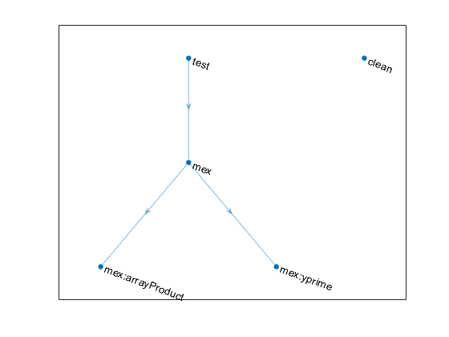

Create Groups of Similar Tasks
You can group tasks that perform similar actions into a single unit of work in the build tool. For instance, you can create a group of all the tasks in your project that build binary MEX files and then list, plot, or run the grouped tasks. Grouping similar tasks makes it easier to define and run a build. For example, if you add a dependency to a task group, all the tasks in the group observe that dependency. Therefore, you do not need to repeat the same dependency for each task in the build file. Similarly, if you run a task group, the build tool runs all the tasks in the group. Therefore, you do not need to pass all the task names to the command that runs your build.
This example shows how to create a group of tasks that build MEX
files in a build file and then run the group and test the resulting MEX files. To
run the example, you must have a supported C compiler installed on your system and
follow the steps in Source and Test Code to set up
your current folder. The build file that you create in this example assumes that
your current folder has a source folder that contains the
arrayProduct.c and yprime.c source files
as well as a tests folder that contains the
MEXFileTest.m test file.
Create Build File
In your current folder, create a build file named buildfile.m
that contains a single function. Use the function to create a plan with tasks
created from the classes in the matlab.buildtool.tasks namespace. For the complete code in the build
file, see Summary of Build File.
Define buildfile Function
In the build file, define a function named buildfile that
returns a plan with tasks created using built-in task classes. Before adding the
tasks, import the required classes and create a plan with no tasks.
function plan = buildfile import matlab.buildtool.tasks.* % Create a plan with no tasks plan = buildplan; end
Add "clean" Task
In the buildfile function, add a task named
"clean" to the plan that deletes outputs and traces of
the other tasks in the build file. To create the task, use the matlab.buildtool.tasks.CleanTask class.
% Add a task to delete outputs and traces plan("clean") = CleanTask;
Add "mex" Task Group
The source folder in this example contains the
arrayProduct.c and yprime.c source
files. To compile each C source file into a binary MEX file, use a matlab.buildtool.tasks.MexTask instance. Because
MexTask instances perform similar actions, organize them into
a task group.
You can create a task group by adding a task whose name contains a colon to
the plan. Start the task name with the task group name followed by a colon. For
instance, add the "mex" task group that contains two tasks
named "mex:arrayProduct" and "mex:yprime"
to the plan. Each of these tasks compiles a source file into a MEX file and
saves the result to a folder named output in your current
folder.
% Add a task group to build MEX files plan("mex:arrayProduct") = MexTask(fullfile("source","arrayProduct.c"),"output"); plan("mex:yprime") = MexTask(fullfile("source","yprime.c"),"output");
Note
To create a task group containing a
MexTask instance for each source file, you can also use
the matlab.buildtool.tasks.MexTask.forEachFile method. (since R2025a)
A task group is an object of the matlab.buildtool.TaskGroup class, which subclasses the matlab.buildtool.Task class and inherits its properties, such as
Description and Dependencies. For
example, set the Description property of the
"mex" task group.
plan("mex").Description = "Build MEX files";
Add "test" Task
Using the matlab.buildtool.tasks.TestTask class, add a task named
"test" to the plan that runs the tests in the
MEXFileTest test class and fails the build if any of the
tests fail. Because the tests must exercise the MEX files, make the
"test" task dependent on the "mex"
task group.
% Add a task to run tests plan("test") = TestTask(fullfile("tests","MEXFileTest.m")); % Make the "test" task dependent on the "mex" task group plan("test").Dependencies = "mex";
Summary of Build File
This code shows the complete contents of the file buildfile.m
in your current folder.
function plan = buildfile import matlab.buildtool.tasks.* % Create a plan with no tasks plan = buildplan; % Add a task to delete outputs and traces plan("clean") = CleanTask; % Add a task group to build MEX files plan("mex:arrayProduct") = MexTask(fullfile("source","arrayProduct.c"),"output"); plan("mex:yprime") = MexTask(fullfile("source","yprime.c"),"output"); plan("mex").Description = "Build MEX files"; % Add a task to run tests plan("test") = TestTask(fullfile("tests","MEXFileTest.m")); % Make the "test" task dependent on the "mex" task group plan("test").Dependencies = "mex"; end
Visualize Task Group
Create a dependency graph of the build plan using the plot
method. By default, the method represents the "mex" task group as
a single node in the graph. To display the tasks in the "mex"
task group, call the method using ShowAllTasks=true as an
input. Because the "test" task depends on the
"mex" task group, the edges in the graph indicate that the
"mex:arrayProduct" and "mex:yprime" tasks
must run before the "test" task runs.
plan = buildfile; plot(plan,ShowAllTasks=true)

Run Task Group
You can run all the tasks in a task group or a specified task in a task group by
using the buildtool command or the run
method. If you specify a task group (for example, buildtool
), then the build tool runs all
the tasks in the task group. If you specify a task in a task group (for example,
mygroupbuildtool ), then the
build tool runs only the specified task.mygroup:taskN
List the tasks in the build file including the tasks in any task groups.
buildtool -tasks all
clean - Delete task outputs and traces mex - Build MEX files mex:arrayProduct - Build arrayProduct MEX file mex:yprime - Build yprime MEX file test - Run tests
Run the "mex" task group. The
"mex:arrayProduct" and "mex:yprime" tasks
in the task group build binary MEX files and save them to the
output folder. The build run progress includes information
specific to your compiler.
buildtool mex** Starting mex:arrayProduct mex source\arrayProduct.c -output output\arrayProduct.mexw64 Building with 'MinGW64 Compiler (C)'. MEX completed successfully. ** Finished mex:arrayProduct ** Starting mex:yprime mex source\yprime.c -output output\yprime.mexw64 Building with 'MinGW64 Compiler (C)'. MEX completed successfully. ** Finished mex:yprime ** Done mex
Run the "test" task. Even though the "test"
task depends on the "mex" task group, the build tool skips the
tasks in the task group because neither their inputs nor outputs have changed. In
this example, both the tests in the tests folder pass and the
"test" task runs successfully.
buildtool test** Skipped mex:arrayProduct (up-to-date)
** Skipped mex:yprime (up-to-date)
** Done mex
** Starting test
..
Test Summary:
Total Tests: 2
Passed: 2
Failed: 0
Incomplete: 0
Duration: 0.50099 seconds testing time.
** Finished testRun the "clean" task to delete outputs and traces of the other
tasks in the plan. When you delete the outputs or the trace of a task, the build
tool no longer considers the task as up to date.
buildtool clean** Starting clean Deleted 'C:\work\output\arrayProduct.mexw64' successfully Deleted 'C:\work\output\yprime.mexw64' successfully ** Finished clean
Run the "mex:arrayProduct" task in isolation to build a fresh
MEX file.
buildtool mex:arrayProduct** Starting mex:arrayProduct mex source\arrayProduct.c -output output\arrayProduct.mexw64 Building with 'MinGW64 Compiler (C)'. MEX completed successfully. ** Finished mex:arrayProduct
Now, run the "test" task again. The build tool runs only the
"mex:yprime" task in the task group. It skips the
"mex:arrayProduct" task because the task is up to
date.
buildtool test** Skipped mex:arrayProduct (up-to-date)
** Starting mex:yprime
mex source\yprime.c -output output\yprime.mexw64
Building with 'MinGW64 Compiler (C)'.
MEX completed successfully.
** Finished mex:yprime
** Done mex
** Starting test
..
Test Summary:
Total Tests: 2
Passed: 2
Failed: 0
Incomplete: 0
Duration: 0.50383 seconds testing time.
** Finished testSource and Test Code
This section shows how to set up your current folder for running this example.
Copy Source Files
In your current folder, create the source folder if it does
not exist. Then, copy two C source files named arrayProduct.c
and yprime.c to the source folder. For
more information about the source files used in this example, see Tables of MEX Function Source Code Examples.
mkdir source copyfile(fullfile(matlabroot,"extern","examples","mex", ... "arrayProduct.c"),"source","f") copyfile(fullfile(matlabroot,"extern","examples","mex", ... "yprime.c"),"source","f")
Create Tests
In your current folder, create the tests folder if it does
not exist.
mkdir testsIn a file named MEXFileTest.m in the
tests folder, create the MEXFileTest test
class to test the MEX files corresponding to the C source files.
classdef MEXFileTest < matlab.unittest.TestCase methods (Test) function test1(testCase) import matlab.unittest.fixtures.PathFixture testCase.applyFixture(PathFixture(fullfile("..","output"))) actual = arrayProduct(5,[1 2]); expected = [5 10]; testCase.verifyEqual(actual,expected) end function test2(testCase) import matlab.unittest.fixtures.PathFixture testCase.applyFixture(PathFixture(fullfile("..","output"))) actual = yprime(1,1:4); expected = [2.0000 8.9685 4.0000 -1.0947]; testCase.verifyEqual(actual,expected,RelTol=1e-4) end end end